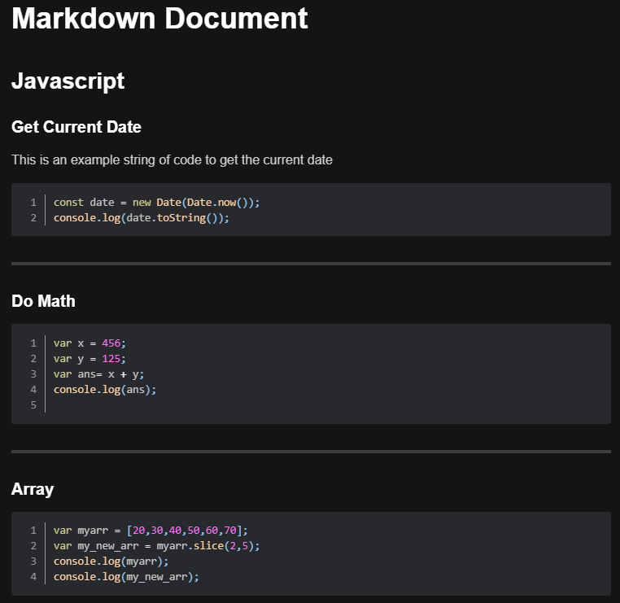

Hi everyone! This is the beginning of my GitPage! Through the semester I hope to work on an develop this page in order to make it a proper website for hosting all of my work! I have the following goals for this Site:
There’s Still a long way to go, so please bear with me while the Site is worked on!
For the time being see below for my current work for the Class:
This week, I explored more into utilizing markdown for creating documents. In my paticular case, I focused primarily on getting runnable code working in a markdown document.
My first challenge was to first find a markdown viewer that supports this, as it is not a built in feature. I ended up utilizing Atom and Markdown Preview Enhanced, which supports this functionality.
Check it out HERE
While I managed to get the Scripted Languages operational fairly quickly (Javascript), I had a bit of an issue getting compiled languages working (Java).
After a few hours of research, I figured out that I was able to run Java Command Line commands within the typescript, and it would compile them automatically without extra commands. So I made two runnable code blocks for the example I made:
All in all, I learned a lot of information about Markdown this week and managed to make something I would likely use in my own lessons.
Check out my markdown files HERE
I found it interesting through the texts about the evolution of technology about the rapid growth in recent times. From the text “A Short History of Educational Technology,” it clearly took us a very long time in order to get where we are today. This is likely due to the massive pushbacks any new technology had when attempting to be incorporated into education.

It took an extremely long time to move from an oral history to a written one. However, ever since the 1920’s with the introduction of radio, we seem to be moving on a sharply increasing curve of technological revolution.

This of course also affects education, and in the past few years, teachers have adopted brand new technologies quicker than ever before in order to help further the education of students. As the article states, it is a paradigm shift for this educational technology. However, it is important to stop and think for a moment. Despite all the good this technology can help with, it has become a full-time job to stay on top of all of the latest trends of technology. Perhaps it is long overdue that we take a step back and reflect for a moment and focus on the core aspect of educational technology; the education itself. All the money spent on elaborate programs are wasted if they don’t actually assist students in the classroom. I think while we won’t be slowing down from this technological boom anytime soon, it is important to look back and make sure that our students are receiving the actual education they deserve, even if it must be taught on chalkboards.